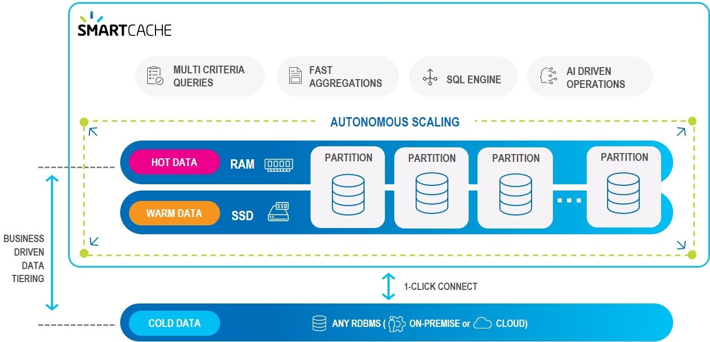

SmartCache provides fast, scalable cache from any data store.
SmartCache Overview
The SmartCache environment can be illustrated as follows:

Details of the SmartCache Technologies
Here are some of the detailed technologies that make SmartCache smart.
One-Click Connect to Existing Data Source
SmartCache's Ops Manager GUI provides built-in connectors to the most popular databases:

Database tables can be imported as-is, or can be limited to selected columns and other properties using the Ops Manager GUI, and without writing custom code.
Data can be stored on-prem, in the cloud, or a hybrid combination of cloud and on-prem.
Rule-Managed Data Tiers
User-defined business rules allows you to place the most important data in "hot" storage (RAM), while other data can be in "warm" (SSD) or "cold" (HD) storage.

"Important" does not necessarily mean "most frequently accessed" — for example, your business rules may place premium customers in hot storage, even if their data is less frequently required.
Smart Data Co-Location
Distributed server-side data aggregation and code co-location peovides high concurrency, full data integrity and reduces networking and serialization overhead.

Multi-Index Queries
Unlike simple key-value data stores, SmartCache uses secondary, tertiary, ... n-ary indexes to organize your data.
This means that where a key-value approach would duplicate the entire data store for each defined index, SmartCache allows a virtually unlimited number of indexes to be maintained — with very little RAM or processing overhead.

Artificial Intelligence Ops (AIOps) for Multi-Directional Scaling
User-defined rules can automatically scale up/down or scale out/in when system demands change.
For example a rule could state:
When the RAM in use exceeds 80% of the total currently allocated RAM for more than 2 minutes, scale up the RAM by a factor of 4.
Rules can also be time-dependent, for example automatically changing storage allocations before and after Black Friday or other times when unusual transaction volumes may occur.
Hybrid Mix of On-Prem and Cloud Storage
Using
Connect and Trigger SQL and Custom SDK queries
SmartCache supports the full SQL-99 standard, allowing complex queries to be performed with optimal speed and minimal memory footprint. Custom SDK calls that use standard SQL requests can be handled without requiring source code changes.
SmartODS
SmartODS creates an optimized data store using your existing data store technology, or providing an independent, self-contained solution.
SmartODS System Overview
The SmartODS environment can be illustrated as follows:

| Item | Description | Technologies |

|
One-click connect to multiple systems of record with real-time and batch integrations | Oracle, ....., AWS, Azure |

|
Connect to Existing ODS, using CDC or standard connectors/ETL | Oracle, ....., AWS, Azure |

|
Data is stored in multiple data storage tiers — hot (in-memory), warm (SSD), and cold | RAM, SSD, HD, MemoryXtend |

|
Enterprise ready designed for 99.999% availability and data replication, and enterprise security | SQl-99 |

|
High performance compute engine with millisecond response time for digital applications | |

|
Event driven architecture - allow applications to subscribe to different event templates | |

|
Unified API layer for all digital applications and operational analytics |
Details of the SmartODS Technologies
Here are some of the detailed technologies that make SmartODS smart.
One-Click Connect to Systems of Record and ODS
SmartODS provides an easy connection to your existing systems of record and ODS. This allows SmartODS to use your systems of record as its ODS implementation, or to create an ODS using SmartODS.
Rule-Managed Data Tiers
User-defined business rules allows you to place the most important data in "hot" storage (RAM), while other data can be in "warm" (SSD) or "cold" (HD) storage.
"Important" does not necessarily mean "most frequently accessed" — for example, your business rules may place premium customers in hot storage, even if their data is less frequently required.
Event Driven Architecture
xxxxxxxxxxxxxxxxxxxxxxxxxxxxxxxxxxx
Unified API Layer
xxxxxxxxxxxxxxxxxxxxxxxxxxxxxx